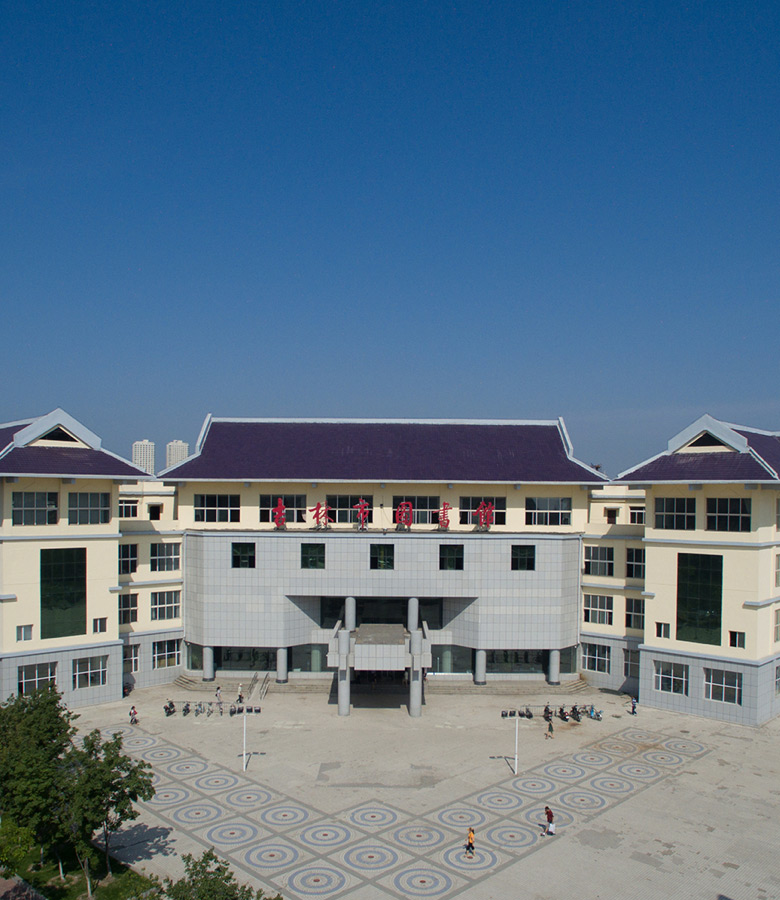

吉图介绍
吉林市图书馆始建于1909年，新中国成立后为吉林省图书馆。1954年吉林省图书馆随吉林省省会从吉林市迁至长春市，原吉林省图书馆馆址更名为吉林市图书馆。1999年吉林市委市政府投资在吉林市解放东路建设新馆，2003年新馆建成并投入运行。
吉林市图书馆建筑面积1.54万平方米，内设阅览室11个，阅览座位1650个，实行365天面向社会全面免费开放，日均接待读者2000人次。
截止2016年底，吉林市图书馆拥有中文图书报刊、外文图书期刊、古籍、民国文献、满铁文献等藏书177余万册，其中，12万册古籍线装书和6万多册民国时期文献为特色馆藏，具有很高的史料价值。2009年吉林市图书馆被确定为国家重点古籍保护单位，17种古籍善本列入《国家珍贵古籍名录》。
吉林市图书馆致力于数字图书馆建设，可用数字资源总量已达28TB，能够为读者提供视频、音频、中国知网学术期刊、知航学术搜索等数字文献服务。电子导读屏、自助式大屏幕阅刊机、歌德电子书借读机、音乐阅读机、3D互动立体书等设备的应用以及无线网络全覆盖，使读者服务工作更加便捷高效，吉林市图书馆数字服务能力不断提升。
吉林市图书馆定期或不定期地举办各种内容丰富、形式多样的阅读活动，年均举办160余场次，其中，“松花江文化讲坛”、“百姓来讲”、“少儿书画大赛”等活动已经成为品牌文化活动。“松花江文化讲坛”自2008年开办以来，坚持每周1期，从未间断。王蒙、阎崇年、、蒙曼、郦波、孟宪实、金一南、杜文龙、纪连海、商传、马瑞芳、孙立群、王树增、康震等50余名国内知名作家学者应约来讲，内容精彩纷呈，深受读者欢迎，有效地发挥了“城市课堂”作用。近年来，吉林市图书馆先后被命名为吉林省社科普及基地、国家“一级图书馆”、吉林省未成年人思想道德教育示范基地、全国科普基地。
吉林市图书馆坚持秉承“读者至上，服务第一”的服务宗旨，坚持培树“精细、责任、奉献”的组织文化，坚持均等性、普惠性、便利性的办馆原则，坚持打造百姓身边的图书馆和引领阅读的学习交流中心，为加快构建现代公共文化服务体系做出应有的贡献！
